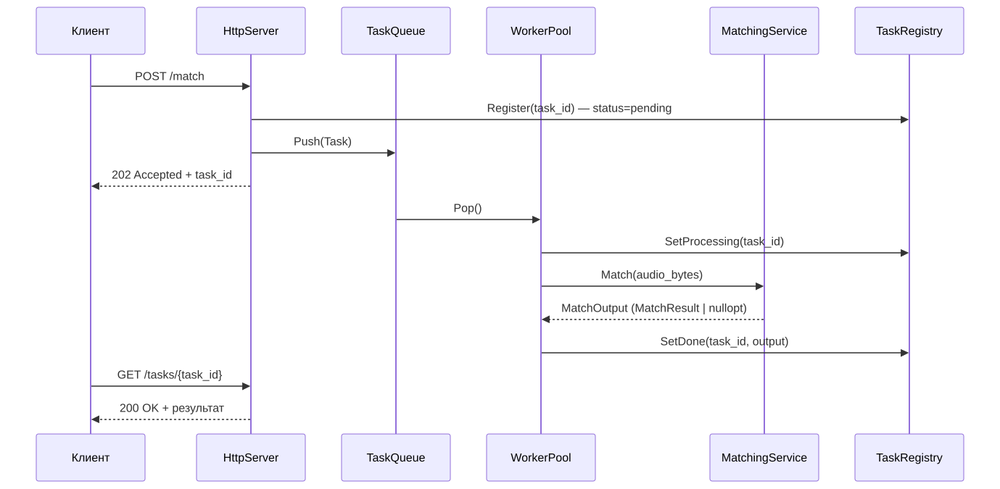

- Generated by
 1.9.8
1.9.8
|
AcoustID Server
Audio fingerprinting server
|
Система разделена на четыре слоя. Зависимости направлены строго сверху вниз; взаимодействие между слоями — только через абстрактные интерфейсы.

| Слой | Ответственность | Ключевые классы |
|---|---|---|
| Server | HTTP-транспорт, маршрутизация, авторизация, очередь задач | HttpServer, TaskQueue, TaskRegistry, WorkerPool |
| Domain | Бизнес-логика, координация операций | IndexingService, MatchingService |
| Core / DSP | Вычислительное ядро, DSP-алгоритмы | AudioFingerprintEngine, FftEngine, PeakExtractor, HashGenerator, VotingEngine |
| Storage | Абстракция хранилища и её реализация | ITrackRepository, SQLiteRepository |
Domain-слой не знает о Crow или SQLite напрямую: MatchingService и IndexingService работают с ITrackRepository — абстрактным интерфейсом, который реализует SQLiteRepository. Замена БД потребует только новой реализации интерфейса, без изменений в domain/ или core/.
Логика индексирования инкапсулирована в IndexingService и вызывается из двух контекстов без дублирования кода: CLI-инструмента indexer и административного HTTP-эндпоинта.

POST /match не ждёт результата: HttpServer регистрирует задачу в TaskRegistry, кладёт её в TaskQueue и немедленно отвечает 202 Accepted с task_id. Один из потоков WorkerPool забирает задачу из очереди, прогоняет её через MatchingService и записывает результат обратно в TaskRegistry. Клиент опрашивает GET /tasks/{id}, пока статус не станет done или error.

| Уровень | Проблема | Решение |
|---|---|---|
| Между процессами | CLI (indexer) и HTTP-сервер пишут одновременно | SQLite WAL mode |
| Внутри процесса | Воркеры читают, admin-эндпоинт пишет | std::mutex в SQLiteRepository |

| Шаг | Вход | Выход | Класс |
|---|---|---|---|
| Декодирование | Байты MP3/WAV | vector<float> сэмплов | AudioDecoder |
| FFT | Сэмплы, фреймы по 2048 | Спектрограмма (лог-мощность) | FftEngine |
| Пики | Спектрограмма | vector<Peak> (constellation map) | PeakExtractor |
| Хэши | Пары пиков | vector<Fingerprint> | HashGenerator |
| Запись | Fingerprints + метаданные | Строки в SQLite | SQLiteRepository |
Весь пайплайн от сэмплов до fingerprints собран в фасаде AudioFingerprintEngine::Process() — и индексирование, и распознавание используют один и тот же код, поэтому отпечаток фрагмента гарантированно сравним с отпечатком, сохранённым при индексировании.

| Статус | Когда устанавливается |
|---|---|
pending | Сразу при регистрации в TaskRegistry |
processing | Воркер взял задачу из очереди |
done | Вычисления завершены (с результатом или без) |
error | Исключение при декодировании или обработке |
Амплитуда сигнала во времени — неудобное представление для поиска паттернов: один и тот же трек с разной громкостью даёт разные амплитуды, а шум накладывается прямо на сигнал. Спектрограмма раскладывает сигнал по осям времени, частоты и мощности — характерные паттерны в этом представлении устойчивы к изменению громкости, лёгкому шуму и сжатию аудио.
FftEngine строит спектрограмму в три шага:
frame_size_ сэмплов (по умолчанию 2048), каждый следующий сдвинут на hop_size_ сэмплов (по умолчанию 1024 — 50% перекрытие). Перекрытие нужно, чтобы события на границах фреймов не терялись.frame_size_ вещественных сэмплов получается frame_size_ / 2 + 1 комплексных бинов; DC- и Найквист-бины отбрасываются, остаётся frame_size_ / 2 бинов — см. FftEngine::NumBins().10 * log10(power + ε)) каждого фрейма укладывается в строку матрицы Spectrogram, хранимой row-major: (число фреймов) × NumBins().Прямое сравнение спектрограмм дорого и неустойчиво к шуму. Вместо этого PeakExtractor извлекает только локальные максимумы — точки, чья мощность строго больше мощности всех соседей в окне (2·frame_radius_+1) × (2·bin_radius_+1) вокруг них, — и отбирает те, что превышают порог медиана(фрейма) + offset_db_.
Плотность пиков дополнительно контролируется по зонам и частотным полосам (см. Частотные полосы): в каждой зоне из zone_frames_ фреймов на каждую полосу оставляется не более peaks_per_band_ самых громких пиков. Это не даёт громким низкочастотным долям заглушить более тихие, но информативные высокочастотные пики — без этого constellation map вырождался бы в набор пиков из одной-двух полос.
Пик задан координатами (время, частота). Сравнивать пики по отдельности ненадёжно — мелкие искажения слегка смещают координаты. HashGenerator решает это, кодируя не отдельный пик, а пару: для каждого пика-якоря перебираются пики-цели в окне до max_target_offset_ фреймов после него (не более max_targets_per_anchor_ целей на якорь), и пара упаковывается в один uint32_t:

Абсолютное время якоря в хэш не входит — оно сохраняется в БД отдельно (Fingerprint::anchor_frame_) и используется на этапе голосования.
При распознавании фрагмент проходит тот же пайплайн, и полученные хэши ищутся в базе. Для каждого совпавшего хэша известны две временны́е метки: позиция якоря в треке (из БД) и позиция якоря во фрагменте. Их разность — Δ — равна смещению фрагмента относительно начала трека. Если фрагмент действительно взят из этого трека, Δ одинаково для всех его совпавших хэшей; случайные совпадения дают случайные, не концентрирующиеся Δ.
VotingEngine::Vote() считает голоса в два уровня, а не в один общий подсчёт по всем парам (track_id, Δ):
(track_id, Δ). Остальные Δ того же трека (шумовые совпадения на других смещениях) в дальнейшем сравнении не участвуют.votes_ и runner_up_ в MatchResult.Такое разделение принципиально: без него второй по силе пик Δ того же правильного трека мог бы сам оказаться "runner-up" и искусственно занизить score_ (отношение votes_ / runner_up_), хотя реальный конкурент — случайный шум от других треков — гораздо слабее.

Результат сопровождается score_ — отношением голосов победителя к голосам второго места (+∞, если конкурентов не было). Итог засчитывается только если голосов не меньше min_votes_ и score_ не меньше min_score_ratio_ — оба условия задаются в VotingEngineConfig.
PeakExtractor::GetFrequencyBands() делит спектр на 8 полос — логарифмическое разбиение, примерно соответствующее музыкально значимым диапазонам (при frame_size_=2048, sr=44100):
| Полоса (бины) | Частота | Название |
|---|---|---|
| [1, 4) | ~21–86 Гц | суб-бас |
| [4, 8) | ~86–172 Гц | бас |
| [8, 16) | ~172–344 Гц | низ-середина |
| [16, 32) | ~344–688 Гц | середина |
| [32, 64) | ~688–1377 Гц | верх-середина |
| [64, 128) | ~1377–2754 Гц | присутствие |
| [128, 256) | ~2754–5511 Гц | яркость |
| [256, 512) | ~5511–11025 Гц | воздух |
Контроль плотности пиков (PeakExtractor::ApplyDensityControl) применяется отдельно в каждой паре (зона, полоса) — см. Constellation map. Бины с индексом 512 и выше в полосы не попадают и в хэшировании не участвуют — HashGeneratorConfig::freq_bin_limit_ отбрасывает их ещё на этапе HashGenerator::Generate().
Встраиваемая база не требует отдельного процесса, хранит все данные в одном файле и поддерживает режим WAL. Для нагрузки в единицы-десятки параллельных клиентов этого достаточно. Переход на PostgreSQL при необходимости не затронет бизнес-логику — нужна лишь новая реализация ITrackRepository.
FFTW требует системной установки и распространяется под GPL. pocketfft — header-only библиотека под MIT, автоматически использующая SIMD при сборке с оптимизациями. Вся FFT-логика изолирована в FftEngine — замена библиотеки не затронет остальной код.
Boost.Beast требует много низкоуровневого кода для базовых HTTP-операций. Crow даёт более высокоуровневый интерфейс, header-only и поддерживает multipart-запросы, нужные для загрузки аудиофайлов.
Хэш кодирует три числа: частоту якоря (9 бит), частоту цели (9 бит) и временной интервал между ними (14 бит) — ровно 32 бита без потерь (см. HashGenerator::PackHash). 16-битный хэш давал бы слишком много коллизий; 64-битный вдвое увеличил бы объём базы данных.
Построение отпечатка и поиск по базе — вычислительно нетривиальная операция. Синхронная обработка блокировала бы HTTP-поток и при нескольких параллельных запросах привела бы к деградации отклика. POST /match только регистрирует задачу и немедленно возвращает task_id; результат — через GET /tasks/{id}.
Абсолютный порог амплитуды не работает: для тихих треков он отсекает все пики, для громких пропускает шум. Порог PeakExtractor вычисляет относительно медианы конкретного фрейма — это даёт стабильную плотность пиков независимо от уровня громкости записи.